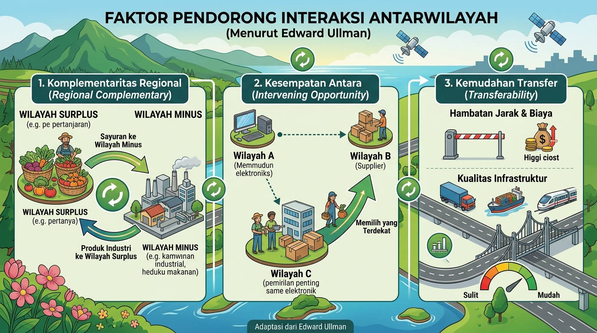
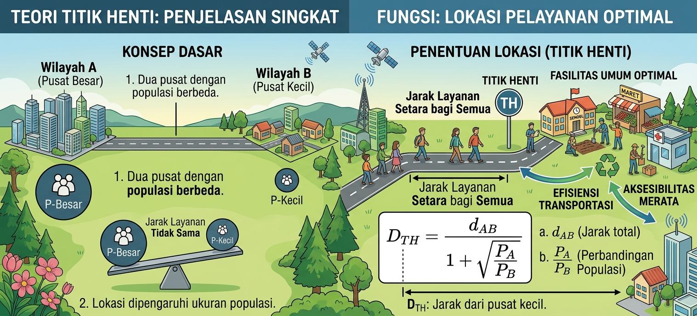

Interaksi Antar Wilayah Terhadap Pembangunan
Selamat datang, Siswa dari Sekolah! Media pembelajaran ini dirancang untuk membantumu memahami dinamika keruangan, pusat pertumbuhan, serta dampak interaksi wilayah terhadap kemajuan ekonomi dan sosial.
Materi Pembelajaran
Faktor, Teori & Dampak
Evaluasi Kompetensi
3 Jenis Kuis Interaktif
Materi & Konsep Interaksi Antar Wilayah

1. Faktor Pendorong Interaksi
Menurut Edward Ullman, hubungan antarwilayah terbentuk ketika kebutuhan dan potensi yang berbeda saling menghubungkan. Tiga faktor berikut menentukan apakah pertukaran menarik dan dapat dilakukan:
- Komplementaritas Regional: Satu wilayah memiliki surplus barang atau jasa yang dibutuhkan wilayah lain. Contohnya, wilayah pertanian memasok beras ke kota, sedangkan kota menyediakan pasar, layanan kesehatan, dan barang industri bagi desa.
- Kesempatan Antara: Interaksi ke wilayah yang lebih jauh dapat berkurang jika ada tempat yang lebih dekat dengan barang atau jasa serupa. Alternatif terdekat ini menghemat waktu dan biaya perjalanan.
- Kemudahan Transfer: Pertukaran bergantung pada biaya dan waktu perpindahan dibanding manfaatnya. Jalan, pelabuhan, angkutan, dan jaringan komunikasi yang baik menurunkan hambatan, sedangkan jarak jauh atau ongkos tinggi dapat melemahkan hubungan.

2. Teori Interaksi Wilayah
Teori interaksi membantu memperkirakan kuatnya hubungan antara dua pusat kegiatan dan batas wilayah pengaruhnya. Hasil perhitungan merupakan model kecenderungan, bukan angka pasti untuk semua jenis hubungan.
- Teori Gravitasi (W.J. Reilly): Rumus sederhananya I = (P1 x P2) / d^2. P1 dan P2 adalah jumlah penduduk, sedangkan d adalah jarak. Dengan faktor lain dianggap sama, penduduk yang lebih besar meningkatkan interaksi, sementara jarak yang makin jauh menurunkannya secara cepat.
- Teori Titik Henti: Teori ini memperkirakan batas layanan di antara dua kota berdasarkan jarak dan jumlah penduduknya. Titik tersebut cenderung lebih dekat ke kota yang penduduknya lebih sedikit karena kota yang lebih besar memiliki daya tarik lebih kuat. Misalnya, kota berpenduduk 400 ribu jiwa akan menarik titik henti lebih dekat ke kota tetangganya yang berpenduduk 100 ribu jiwa.

3. Dampak Terhadap Pembangunan
Interaksi antarwilayah membawa peluang sekaligus tantangan. Dampaknya dipengaruhi oleh akses transportasi, persebaran layanan, kesiapan masyarakat, dan cara pembangunan dikelola.
- Dampak Positif: Pasar yang lebih luas membantu produsen menjual hasilnya dan membuka peluang kerja. Arus informasi, teknologi, pendidikan, serta layanan kesehatan juga dapat menjangkau wilayah yang sebelumnya sulit diakses.
- Dampak Negatif: Kegiatan ekonomi yang terkonsentrasi di kota dapat mendorong urbanisasi, kemacetan, dan alih fungsi lahan pertanian. Jika investasi dan layanan tidak tersebar merata, wilayah pinggiran berisiko tertinggal dan kesenjangan desa-kota meningkat.
Kuis Interaktif Geografi
1. Kondisi saling melengkapi antarwilayah di mana suatu wilayah mengalami surplus sumber daya dan wilayah lain mengalami defisit disebut...
2. Tokoh geografi yang mengemukakan teori interaksi wilayah berdasarkan jumlah penduduk dan jarak adalah...
3. Jika wilayah yang lebih dekat menyediakan barang serupa, faktor apa yang dapat mengurangi interaksi dengan wilayah yang lebih jauh?
4. Menurut teori gravitasi, jika jarak dua kota menjadi dua kali lipat sementara jumlah penduduk tetap, kekuatan interaksinya menjadi...
5. Pembangunan jalan dan pelabuhan yang menurunkan waktu serta biaya pengiriman terutama meningkatkan faktor...
Kelompokkan karakteristik berikut ke dalam kategori yang tepat (Klik tombol untuk menguji):
Tentukan apakah karakteristik tersebut merupakan ciri Wilayah Desa atau Wilayah Kota.
1. Dominasi mata pencaharian di sektor agraris / pertanian
2. Pusat industri manufaktur, perdagangan & jasa modern
3. Kepadatan penduduk tinggi dengan bangunan dan kegiatan yang rapat
4. Mata pencaharian beragam di sektor perdagangan, jasa, dan industri
5. Permukiman relatif jarang dengan hubungan sosial warga yang erat
Pasangkan istilah konsep interaksi wilayah dengan definisi yang paling sesuai:
Pilih jawaban yang tepat dari dropdown di bawah ini.
Sertifikat Penyelesaian
Sertifikat Apresiasi
Diberikan kepada
dari
Atas partisipasi dan penyelesaian Evaluasi Pembelajaran Interaksi Antarwilayah terhadap Pembangunan.
Jumlah benar: dari 15 soal
Nilai akhir: dari 100
Pilihan ganda: dari 5 benar
Mengelompokkan: dari 5 benar
Mencocokkan: dari 5 benar